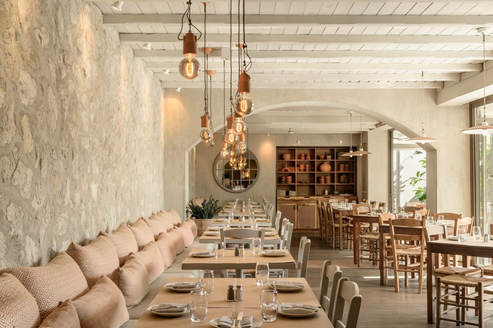
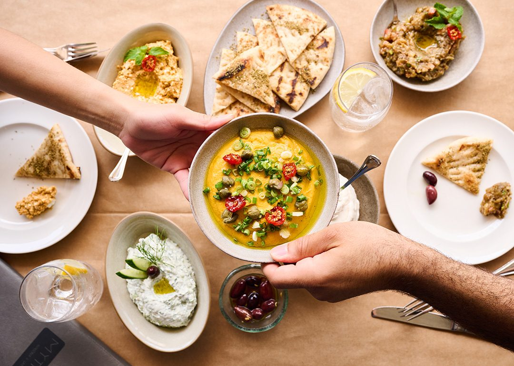
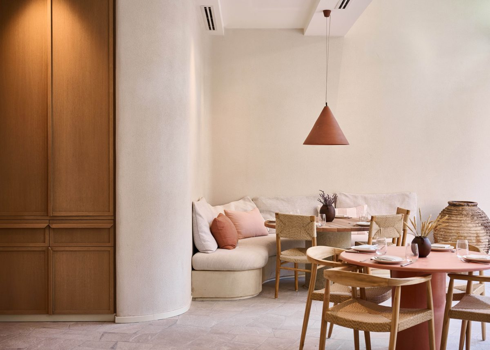
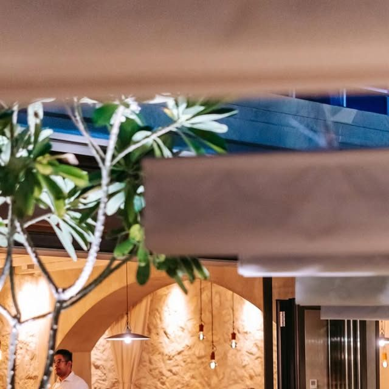
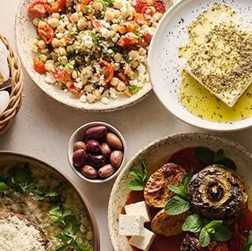

Prepared for Mythos Kouzina & Grill11 October 2026

xFusion Creative
Marketing audit
A typical post gets about 25 likes from your 17,000 followers, and your kitchen was Highly Commended in the 2026 Time Out Dubai awards.
Your last twelve Instagram posts drew 12 to 29 likes each. Your terrace, your baked feta and your 12pm lunch rush are already in the feed. We read your website and your Instagram, and this is what we found, the videos we would make, and the plan.
Strong material, and a feed that is not yet working for you.
Mythos has plenty to work with: awards and press, three venues: JLT, City Walk and Kilikio in the Depachika Food Hall, Palm Jumeirah, a terrace under the palms, and a kitchen that goes from quiet morning prep to the 12pm lunch rush, in your own caption. Your feed already shows the terrace, the kitchen and the 12pm rush. What we would work on is reach per post and bookings, so the office workers around JLT and people across Dubai have a reason to book this week.
17K
Instagram followers, from 1,233 posts
12 to 29
likes on each of your last twelve posts
25
median likes on those twelve posts
3
venues: City Walk, JLT and Kilikio in the Depachika Food Hall, Palm Jumeirah
What is already strong, and worth building on
Recognition you can point to. jlt.ae lists you as Highly Commended in the Greek category of the Time Out Dubai Restaurant Awards 2026.
Three venues: City Walk, JLT and Kilikio by Mythos in the Depachika Food Hall, Palm Jumeirah. City Walk and JLT have Reserve buttons on your website.
A room and a terrace to film: white beams, terracotta pendants, and a terrace with palms overhead.
Dishes with a story already in your captions: the baked feta, the Greek salad with no lettuce, the 12pm lunch rush, and the lemons from the basket to the kitchen.
At JLT and City Walk you are open 12pm to 11:30pm every day, according to your website. Three venues, three audiences to film for.
You do not need a new site or a new menu. What would change the numbers is reach per post, so people in JLT and across Dubai see the terrace, the kitchen and your guests, posted on a plan, and know why it is worth a booking tonight.
02 · What has worked for places like yours
Real people, in the venue, doing something worth watching.
These are the formats we plan for restaurant clients: a skit, a dish moment, a trend, a challenge, a launch, a new dish, an offer, a hero product and a local call-out. Each one gives people a reason to watch and a reason to visit.
70M
views on one reel for a Greek restaurant in Newcastle
3.5M
views on one reel for a Whitley Bay restaurant
+40%
weekly sales for that Greek restaurant, in the owner's own words
A reason beats a nice shot. A plate of baked feta on its own gives people little to watch. The same plate with a question, a challenge or a story gives them a reason to stay.
The venue is the set. Your terrace, your room, your pass at 12pm. A licensed UAE crew would film in the place people will visit, to our shot list.
It is planned, not luck. We pick the formats for your menu and your week before the crew arrives.
View counts from our own client dashboard, checked 11 October 2026. Sales figure from the owner's own review.
03 · Your website
Our check of your homepage found no Meta pixel.
The site covers all three venues, has a Reserve button for JLT and City Walk, and carries a press excerpt on the homepage. These are the changes we would make so it works harder for bookings.
What we saw
Why it matters
Fix
No Meta pixel on the homepage
We found no Meta pixel on the homepage of mythosdubai.com. The JLT and City Walk pages were not checked for one.
Add the pixel to the pages people visit. Everyone who watches a video or opens the reservations page can be reached again.
A press excerpt stands in for your story
The homepage press block shows one excerpt, "Dream no more".
A licensed UAE crew would film the team at the pass and on the terrace, and we would link the film from the homepage.
The JLT page is brief
The JLT page has a short intro, a VIEW MENUS button and a Reserve button.
We would put a 20 second film of the JLT room and terrace at the top of the page. People book what they can see.
No TikTok
We found links to Instagram and Facebook only.
We would post the same videos to TikTok, so each one reaches a second audience in Dubai.



Photos from your own website. The room and the mezze are the kind of shot we would plan for the video.
04 · Your social channels
Your best posts are the terrace, the feta and the business lunch.
17K
Instagram followers
29
likes on the terrace, the baked feta and the business lunch post: the joint highest of your last twelve
0 to 3
comments on each of your last twelve posts, 23 July to 27 September
12
likes on each of your two weakest posts, from 23 and 29 July
Your last twelve posts ran from 23 July to 27 September, each with #morethanamyth in the caption. The pattern:
The range is tight. Twelve posts, 12 to 29 likes each, 0 to 3 comments, and a median of 25 likes on 17,000 followers.
Your business lunch post drew 29 likes, and your "From the basket to the kitchen" post drew 25. Video with people in frame and a clear reason to book is the format we would plan around.
Your captions are better than your posts. "If your Greek salad has lettuce in it, you're not eating Greek food." drew 25 likes. "The exact moment Mythos switches from quiet morning prep to the 12pm lunch rush." drew 27 likes and 2 comments. Those are video hooks.
What this means. You already know what is worth showing. Posts of it, with your team and your guests in frame, filmed in one shoot and posted on a plan, are how Mythos reaches the people who have not booked yet.
Source: instagram.com/mythosdubai public profile and posts, checked 10 October 2026.
05 · What is working in your market
What is already working in your account.
Two posts from your last twelve. The common thread is people, a place and a reason to come.

Your terraceMythos: "Full tables, good food, flowing drinks and even better company." 29 likes, joint highest of your last twelve.

Your best lineMythos: "When you tell the waiter to just bring out the best dishes on the menu." 27 likes and 3 comments, your most commented post.
1
People on screen
Your chefs, your waiters and your regulars, with permission. Skits and challenges, shot on the terrace and at the pass.
2
The terrace is the star
Palms, trellis and lanterns. The terrace post drew 29 likes, joint highest of your last twelve.
3
A reason to come this week
Business lunch, a new dish, the festive table. Every video ends with one and a link to reserve.
06 · Twelve videos we would make
Built from your terrace, your kitchen and your guests.
Every concept uses something you already have. Six are built to bring people in this week. Six are built to keep your Instagram growing.
Videos that bring people in
6 concepts
Skit
Lettuce in a Greek salad
"When a guest asks for lettuce in the Greek salad."
The waiter stops. The chef looks up from the pass. Built on a line from your own caption.
Why: turns a caption that drew 25 likes into a scene with people in it.
Skit
Just bring the best dishes
"We said bring us the best dishes. This is what arrived."
Two guests say the line. The table fills, plate by plate, until there is no table left.
Why: your most commented post, made into a film with people in it.
Challenge
Name the mezze
"Name the dips without looking at the menu."
A table of regulars tries. Honest faces, one wrong answer, one near miss.
Why: a question people answer in the comments, and a reason to tag a friend.
Challenge
The 12pm rush, in one take
"Quiet kitchen to full house. Watch the clock."
One continuous shot from empty pass to the first twenty plates, with the time on screen.
Why: your own caption about the 12pm switch, turned into a film people watch to the end.
Lunch
The JLT lunch test
"Can you do business lunch at Mythos and be back at your desk in an hour?"
A guest from a JLT office, timed from the lift to the lift.
Why: speaks to people who work around JLT.
Group
Ten people, one table
"POV: your team booked a table for ten."
A group arriving, filmed from the head of the table.
Why: sells group bookings in one clip.
Organic that builds the audience
6 concepts
Series
Terrace season
"The terrace is open. This is what tonight looks like."
One short film a week of the terrace, from first guests to a full room.
Why: a weekly series people can follow, built on the terrace post that drew 29 likes.
Team
The person behind the feta
"Our baked feta, and the person who makes it."
One person at a time, 20 seconds each, at the pass and on the floor.
Why: people visit people.
Awards
Highly Commended, Greek
"Highly Commended in the Greek category. This is the dish."
The team on camera saying what the award means to them, then the dish they cook for it.
Why: turns a line on jlt.ae into a reason to book.
Guests
Where are you from?
"Asking our guests which Greek island they would send us to."
Quick answers from guests on the way out, one question at a time.
Why: shows a room full of real people.
Festive
The coin in the cake
"Three coins. One cake. Whoever finds one wins."
The Vasilopita tradition from your festive season page, filmed at a table.
Why: sells the festive table in December.
Three venues
Three venues, one video
"JLT, City Walk and Kilikio. Use the one nearest you."
A 30 second tour, cut to one track, ending on the reservations page.
Why: one film can link each venue to its own page.
07 · The plan
A plan built around the stories you already have.
Week 1
Plan and set up
A call to pick the twelve videos. We write the shot list and brief for a licensed UAE crew, and set up the Meta pixel on mythosdubai.com with your approval.
Week 2
The shoot day
A licensed UAE crew would film at Mythos to our shot list: the 12pm rush, a business lunch and the terrace, in one day. We direct remotely from Newcastle.
After the shoot
Edit, caption and post
We edit, caption and post the videos to Instagram and TikTok, each one ending with a reason to book this week and the link to reserve.
Handover
Review together
We report what the videos reached and what they brought in, then hand over every video for you to keep and reuse.
What the shoot gives you: a batch of short videos filmed at Mythos by a licensed UAE crew to our shot list, edited and captioned, posted on a plan to launch them. You keep every video.
08 · Who we are, and next steps
A Newcastle team that plans the videos, edits them and runs the ads.
We plan every video around what brings people in, a licensed UAE crew would film to our shot list in your venue, and we edit, caption, post and report from our studio. We measure what matters to you: covers, bookings and people through the door, not likes.
70M
views on one reel for a Greek restaurant in Newcastle
3.5M
views on one reel for a Whitley Bay restaurant
+40%
weekly sales for that Greek restaurant, in the owner's own words
Jay Williams and Anya Davey, the founders of Fusion Creative. I plan the videos and run the ads from Newcastle, and a licensed UAE crew would film to our shot list. I would be the person you call about the plan. Our team of editors turns every shoot day into finished videos, and a licensed UAE crew would film each one to our shot list.
Next steps
A 20 minute call to pick the first twelve videos.
Then the shoot day at Mythos, with a licensed UAE crew working to our shot list.

Your best posts are the terrace, the feta and the business lunch.
Your last twelve posts ran from 23 July to 27 September, each with #morethanamyth in the caption. The pattern:
What this means. You already know what is worth showing. Posts of it, with your team and your guests in frame, filmed in one shoot and posted on a plan, are how Mythos reaches the people who have not booked yet.
Source: instagram.com/mythosdubai public profile and posts, checked 10 October 2026.